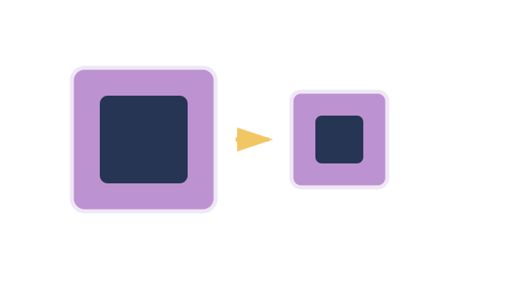

LAUNCH Science · W4L3 · lesson resources
Hold an evidence conference
Choose one shared task or resource within the current lesson stage. Keep the lesson’s 40-minute timetable and 15-minute independent work.
We Do · Hold an evidence conference
Concentration difference, membrane and temperature are unchanged.
| Model patch | Area / cm² | Transfer / units per minute |
|---|---|---|
| A | 10 | 4 |
| B | 20 | 8 |
Choose a pattern, explain it, then name one limit of this model.
Discuss, point, write or dictate your first reason. Use one example first; extend only if there is time.
Reveal shared reasoning after an attempt
Area doubles, and transfer doubles in these model data. More surface allows more particles to cross at once. This does not establish real medicine doses or biological effects.
This page keeps your writing while it stays open. It does not save or send it.
Model explanation and diagram

Describe tells us the pattern. Explain links that pattern to a mechanism. Evaluation asks whether the evidence supports the conclusion.
Watch for: Dye spreading in warm water can include convection. Do not present an uncontrolled demonstration as proof of diffusion rate alone.
Give a smaller support cue
Describe: what changes in the numbers? Explain: why does it change? Start: “When the area doubles, ___ because…”
Optional video · Diffusion
Watch for: What keeps happening when there is no net movement?
Use a short relevant extract within I Do, then pause for an explanation. The clip replaces part of the modelling time.
Open the freesciencelessons video in a new tab
No-video version · use the same question

Particles continue to move randomly and cross in both directions. At equilibrium the crossings balance, so there is no net movement.
Internet is needed for the optional clip. It is concept teaching; viewing it is not completion of a practical.